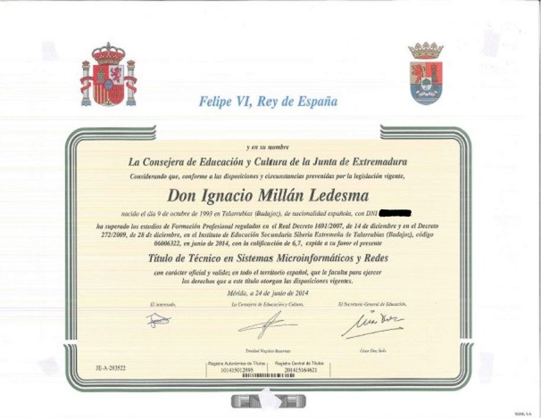

Técnico en Sistemas Microinformáticos y Redes

Requisitos de acceso
Debes cumplir alguno de los siguientes requisitos:
- Tener alguno de los siguientes títulos:
- Título de Graduado/a en Educación Secundaria Obligatoria o de un nivel académico superior.
- Título Profesional Básico (Formación Profesional de Grado Básico).
- Título de Técnico/a o de Técnico/a Auxiliar o equivalente a efectos académicos.
- Haber superado:
- 2º curso del Bachillerato Unificado y Polivalente (BUP).
- Prueba de acceso a ciclos formativos de grado medio (se requerirá tener, al menos, diecisiete años, cumplidos en el año de realización de la prueba).
- Prueba de acceso a la Universidad para mayores de 25 años (la superación de las pruebas de acceso a la Universidad para mayores de 40 y 45 años no es un requisito válido para acceder a FP).
- Una oferta formativa de Grado C incluida en el ciclo formativo.
Salidas profesionales
Trabajar como:
- Instalador-reparador / instaladora-reparadora de equipos informáticos.
- Técnica / técnico de soporte informático.
- Técnica / técnico de redes de datos.
- Reparador / reparadora de periféricos de sistemas microinformáticos.
- Comercial de microinformática.
- Operador / operadora de tele-asistencia.
- Operador / operadora de sistemas.
Puedes trabajar en empresas del sector servicios dedicadas a la comercialización, montaje y reparación de equipos, redes y servicios microinformáticos, o en entidades de cualquier tamaño y sector productivo que utilicen sistemas microinformáticos y redes de datos para su gestión.
Qué voy a aprender
Este profesional será capaz de:
- Instalar y configurar software básico y de aplicación, redes locales cableadas, inalámbricas o mixtas y conectadas a redes públicas.
- Instalar, configurar y mantener servicios multiusuario, aplicaciones y dispositivos compartidos en un entorno de red local.
- Montar y configurar ordenadores y periféricos.
- Determinar la logística asociada a las operaciones de instalación, configuración y mantenimiento de sistemas microinformáticos.
- Diagnosticar disfunciones en sistemas microinformáticos y redes mediante pruebas funcionales.
Plan de formación
Si estudias el ciclo formativo, vas a cursar:
- Montaje y mantenimiento de equipo.
- Sistemas operativos monopuesto.
- Aplicaciones ofimáticas.
- Sistemas operativos en red.
- Redes locales.
- Seguridad informática.
- Servicios en red.
- Aplicaciones web.
- Formación en centro de Trabajo (FCT).
Seguir estudiando
- Curso de Especialización en Implementación de redes 5G (Acceso GM).
- Curso de Especialización en Instalación y mantenimiento de sistemas conectados a internet (IoT) (Acceso GM).
- Otro ciclo de Formación Profesional con la posibilidad de establecer convalidaciones de módulos profesionales de acuerdo a la normativa vigente.
- El Bachillerato en cualquiera de sus modalidades